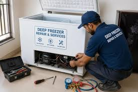

مركز خدمة وإصلاح الديب فريزر المعتمـد
نوفر لكم منظومة صيانة متكاملة تعتمد على الفحص الإلكتروني الحديث وتحديد الأعطال بدقة دون نقل الجهاز. فريقنا من المهندسين المعتمدين مدرب على أعلى مستوى لمعالجة كافة مشاكل التجميد، الفريون، والكروت الذكية في نفس اليوم.
الموديلات المشمولة بالدعم والصيانة المنزلية
يقدم المركز المعتمد خدمات الإصلاح وتوفير قطع الغيار الأصلية لكافة الأنساق والتصاميم:
الديب فريزر الرأسي (Upright Freezer)
جميع موديلات النوفروست المكونة من 4، 5، 6، 7، و8 أدراج (Digital & Analog) مع معالجة انسداد مجاري الذوبان وتلف الحساسات.
الديب فريزر الأفقي (Chest Freezer)
سعات تبدأ من 100 ليتر حتى 500 ليتر للمنازل والاستخدام التجاري، مع إصلاح دوائر التبريد العميقة ومفصلات الأبواب.
الموديلات الذكية (Inverter Systems)
أجهزة التجميد المزودة بمحركات الإينفرتر الموفرة للطاقة وكارتات التحكم الكهرومغناطيسية الحديثة.
الأعطال الشائعة وطرق الإصلاح المعتمدة
نقوم بمهام الفحص والتركيب فورياً بالمنزل لكل عطل من الأعطال التالية:
ضعف أو توقف التجميد
السبب: تسريب فريون أو ضعف كفاءة المكبس
(Compressor).
الحل: كشف التسريب بالضغط، شحن فريون أصلي
(R134a/R600a)، أو تغيير الموتور.
تراكم الثلج في أدراج النوفروست
السبب: تلف في منظومة الإذابة الاتوماتيكية
(Defrost System).
الحل: تغيير السخان (Heater)، الثرموديسك،
الثرموفيلوز، أو تايمر الإذابة.
إضاءة لمبة الإنذار (Alarm)
السبب: ارتفاع درجة الحرارة الداخلية أو خلل
بالحساسات.
الحل: ضبط وسائط التبريد، تغيير الحساس (Sensor)،
أو إصلاح كارتة الشاشة.
الجهاز لا يعمل نهائياً
السبب: تلف في كارتة التشغيل الرئيسية أو مجموعة
التوصيل.
الحل: فحص واختبار الدائرة الكهربائية واستبدال
القطع التالفة بقطع أصلية.
ارتفاع صوت الضوضاء
السبب: احتكاك مروحة الهواء بالثلج أو تآكل قواعد
الموتور.
الحل: معالجة انسداد الصرف، استبدال المروحة،
وتثبيت المكبس بامتصاص الصدمات.
تسريب مياه أسفل الجهاز
السبب: انسداد خرطوم فتحة تصريف مياه الذوبان.
الحل: تسليك مجرى الصرف وتنظيف حوض التبخير فوق
الموتور.
خطوات تقديم الخدمة في المركز المعتمد
- استقبال البلاغ: تواصل معنا عبر أحد الخطوط الساخنة المباشرة وتسجيل البيانات والطقس التشغيلي للجهاز.
- الفحص الفني: وصول سيارة الخدمة المجهزة إلى موقعك في خلال 24 ساعة للفحص بأجهزة قياس التبريد والكهرباء.
- الإصلاح الفوري: إطلاع العميل على سبب العطل وتكلفة قطع الغيار قبل البدء في عملية الاصلاح المباشر.
- تسليم الضمان: تشغيل الديب فريزر واختبار درجات التجميد، ثم تقديم شهادة ضمان معتمدة على الصيانة والقطع الاستبدالية.
لماذا تختار المركز المعتمد لصيانة الديب فريزر؟
قطع غيار أصلية 100%
نستخدم قطع الغيار المعيارية الموصى بها مصنعياً لضمان العمر الافتراضي للجهاز.
صيانة بموقعك دون نقل
يتم إصلاح 95% من الأعطال داخل المنزل لحماية الفريزر من الصدمات والخدوش أثناء النقل.
نصائح هامة للحفاظ على كفاءة التجميد:
1. احرص على ترك مسافة لا تقل عن 10 إلى 15 سم خلف الديب فريزر لضمان
التهوية الجيدة للمكثف.
2. تجنب ترك باب الفريزر مفتوحاً لفترات طويلة لمنع دخول الرطوبة
وتشكّل الثلج الكثيف.
3. لا تقم بالتحميل الزائد على الأدراج بشكل يغلق منافذ توزيع الهواء
السريع (Air Flow).
الأسئلة الشائعة حول صيانة الديب فريزر
كم تبلغ فترة الضمان المقدمة على الصيانة؟
تتراوح فترة الضمان المعتمدة بين 3 إلى 12 شهراً حسب نوع قطعة الغيار المستبدلة وطبيعة العطل المصلح.
ماذا أفعل إذا كانت لمبة الـ Alarm حمراء وتعمل باستمرار؟
افحص الباب والتأكد من إغلاقه جيداً، وفي حال استمرار المشكلةلأكثر من ساعتين يفضل إيقاف الجهاز والتواصل فوراً مع الخط الساخن لطلب الدعم الفني.